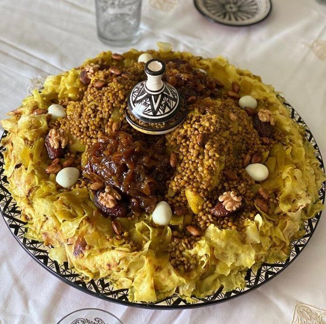

Dans un grand plat ou un pétrin, déposer la farine, le sel et l'eau.
Travailler le tout pour avoir une pâte, la pétrir pendant 10 mn pour la rendre souple et malléable
Huiler les mains et la pâte et en confectionner des boules de la taille d'un abricot. Les huiler et les laisser reposer 5 mn.
Etaler finement une boule de pâte et la faire cuire dans une poêle, chaude et légèrement huilée, pendant 30 secondes.
Etaler une deuxième boule de pâte et la coucher sur la première feuille cuite et la retourner pour la placer contre la poêle.
Cuire les feuilles de pâte en évitant de les durcir
Continuer à étaler les boules de pâte et de les cuire en superposant les feuilles dans la poêle.
Au bout de la 12ème feuille retirer la rangée de pâte et recommencer.
Séparer les feuilles de pâte et les émietter ou les découper en tagliatelles à l'aide de ciseaux
Dans une marmite sur feu moyen, déposer l'oignon, le poulet, les épices, le beurre rance, le bouquet d'herbes, l'huile et l'eau. A ébullition baisser le feu et laisser cuire à couvert pendant 30 mn. Récupérer une louche de sauce et la laisser de côté pour les lentilles. Continuer la cuisson jusqu'à ce que le poulet devienne tendre..
Parfumer le poulet et sa sauce avec 1 c. à café de beurre rance "Smen" et retirer du feu..
Placer les lentilles dans une petite marmite et les couvrir à hauteur d'eau, les cuire à couvert jusqu'à évaporation du liquide. Saler et incorporer la louche de sauce réservée aux lentilles. Couvrir et les laisser mijoter 10 mn avant de les retirer du feu.
Pour servir : placer la pâte à Rfissa dans un couscoussier et la réchauffer à la vapeur. La disposer dans un plat de service, la napper de sauce à l'oignon et la garnir de poulet et de lentilles. Servir le plat très chaud.
Bon à savoir : pour les amateurs de fenugrec, placer 1 c. à soupe de fenugrec dans un petit sac en mousseline et l'incorporer en milieu de cuisson au poulet..
